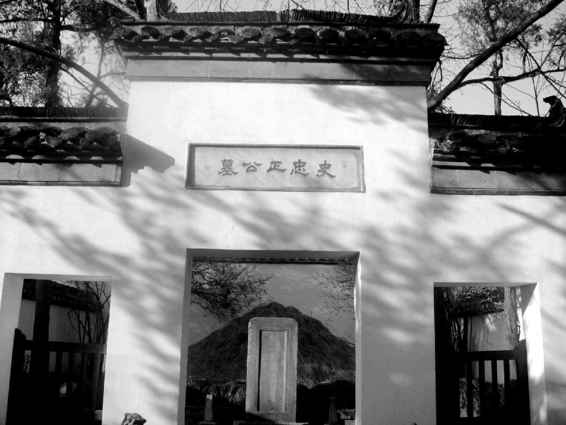
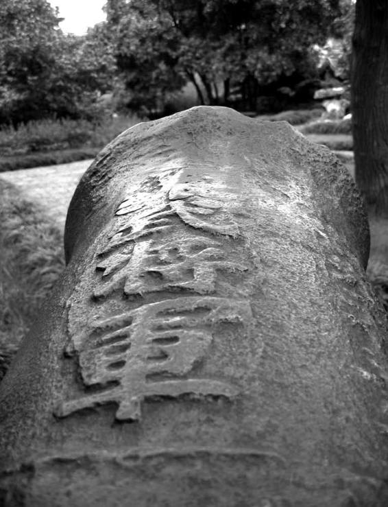

年来的阅读，终至于有这种感觉：假如把现存的史可法材料一件件在桌上摆开，一眼望去，简直不知道是否有一件完全靠得住，似乎都有可疑之处——要么无瑕得可疑，要么又劣陋得可疑，而满清官方审定的《史忠正公集》和应廷吉《青燐屑》便是分别的代表。这真的相当麻烦。一来人物面目不能不受很大影响，二来给我们的工作平添了难度。按我体会，不要说不曾靠自己双眼亲读史料，即便读过一二种的人，也不能指望去把握和确定其中的事实。陷阱太多，或明或隐，非得尽量多读，才绕得过它们，曲折接近真相——甚至绕过了陷阱，而仍不知真相。这种情况，倒并非只在史可法那里才遇到，很多“大人物”都是如此。人们一般只看到“大人物”彪炳青史，事迹传广流远，虽死犹生。实则这仅为一面，而在另一面，名声愈显赫、地位愈重要，面目可能愈搞不清——因为“说法”太多。读史可法，始终有此感觉。我们好像不难在主干大节上把握他，但一到细节处，却每每雾失楼台。
发此感慨，是因马上又要面对一个谜团。
本文从史可法生年疑难中开始，眼下即将收尾，情况却并未变得更顺利，相反又有疑难等待我们。那就是“史可法之死”。之前生年问题，悬之已久，我们努力一番，算是侥幸解决了。此番不同，关于他是怎么死的，这个问题，老老实实说到现在还是无望水落石出。假如过去有人告诉我，史可法从生到死都是一笔糊涂账，我断然不信。然而此刻我想对读者说的，却正是这句话。
起初，或者说事情发生不久的时候，人们有关其下落的讲述——如李清《南渡录》、顾炎武《圣安本纪》、顾苓《金陵野钞》、夏允彝《幸存录》、文秉《甲乙事案》等——要么不知道，要么不能肯定。顾炎武说“不知所在”[99]，李清说“或云被执，叩之不应，见杀；或云不知所之”[100]，文秉说“可法拥七十骑突围而出，行至班竹园地方，清兵追及，歼之，史遂死乱军中”[101]，顾苓说“督师兵部尚书武英殿大学士史可法，不知所终”[102]，夏允彝说“扬州城破，可法死之；或云遁去未死也”。[103]还可以听听应廷吉怎么说。《青燐屑》以“阁部没后”一语肯定史可法已死，却丝毫不提是怎么死的，稍后则引用了一名清军将领的自叙：“有北将曰：‘曩下淮扬，吾当先摧敌，若史公者，业手刃之矣。’”[104]
此人声称，他亲手杀掉一位相貌与史可法相仿的人。这说明，连应廷吉都不直接知道史可法下落，他只能援引一个道听途说的情节，而这情节实际仅仅是说，他杀掉了一个似乎是史可法的人。
众说纷纭，莫衷一是。须知以上诸书有的成稿可能相当晚，距事发时或至二三十年后，但史可法下落仍旧扑朔迷离。
所有讲述中，最接近“第一现场”的，当为史德威的回忆。乙酉四月二十五日：
阁部知势已去，乃与德威诀，持刀自刎。参将许谨，双手抱住，血溅衣袂，未绝；复令德威刃之，德威不忍加。相持昏绝间，（许）谨同数十人拥阁部下城，至东门，谨等被乱箭射死。阁部问：“前驱为谁？”德威以豫王答之。阁部大呼曰：“史可法在此！”北兵惊愕。众前，执赴新城南门楼上。豫王相待如宾，口呼“先生”。[105]
多铎再行劝降，史可法断然拒绝。据史德威说，这时他因担心身上所携五封遗书的安全，“奔盐商段姓家藏《遗书》”，之后再折回南城楼：
回视阁部词色俱厉。豫王曰：“既为忠臣，当杀之以全其名。”阁部曰：“城亡与亡，我意已决。即劈尸万段，甘之如饴。但扬州百万生灵，既属于尔，当示以宽大，万不杀！”遂慨然就义于扬之南城楼上，尸为众兵舁失。[106]
过程算很具体了——死于何地，为谁所杀——后来一般均依此说。但这当中是有疑点的。疑点便是史德威一度离开，然后返回南城楼这个情节。他有没有这样的机会？既然清军已知捉住的是史可法，防范会如此疏松吗？还有，稍前一点，众多扈从死于乱箭，为何史德威独活？特别是脱身后又折返南城楼，可能性如何？须知当时情形，不是街头看热闹，去而复还，无异送死……基于诸多疑惑，我忍不住“以小人之心度君子之腹”——史德威会不会之前（乱箭齐发时）已趁乱逃走，而根本不曾目睹史可法被捕、被害之情形？读其于顺治四年所写《家祭文一》，上述疑问似乎有一些线索：
四月二十有五日，维我府君授命扬之小东门，慷慨激烈，不孝侍侧，肺肝摧裂，非不欲死，方思治棺，旋复被执，几十有二日。[107]
在此，他的视线截止于小东门，亦即“乱箭”齐发那一刻，而不及于南城楼。嗣后，“方思治棺，旋复被执”。说明他离开了，去治棺（这确是史可法托付的事），而且似乎在办这件事过程中被抓。稍后，他又说：
非不可死，夫情有所欲死，力有所能死，势有所可死，而卒三年如一日，忍死以至于今日。[108]
对当日之未死，有一种愧疚。这愧疚，是缘于曾从死亡跟前逃开么？我们有此疑惑，非为追究史德威之不死（他在艰难困苦中终生践行史可法嘱托，忠耿可敬），而是觉得他关系着史可法生命的终点。从目前看，这终点仍然存着问号，还不能画上句号。
但这谜团的最大责任人及制造者，实际是满清政权。他们并非如一百年后表现的那样，对史可法足够尊敬。当他们在扬州杀害他时，压根儿不当回事，就像杀掉任何一个不肯投降的俘虏。史可法生前很看重死有所葬，收史德威为义子，主要也是为己了此心愿，他在给母亲、弟弟的遗书中都提到“得副将史德威为我了后事”[109]。据史德威说，他被抓后关在叛将许定国营中拷审，五月初一获释，“以全忠臣后嗣”。甫放出，即“进城找寻阁部遗骸。但见尸积如山，时天炎热，众尸蒸变难识，不敢妄认”，于是赶往南京向老夫人报讣（尹氏、杨氏已于史从质死后迎至南京）。又过一个多月，史德威再赴扬州，“至段宅找寻原藏《遗书》，而段门杀掠殆尽”，所幸最终“于破屋废纸内捡出”，这便是《史忠正公集》所录五封遗书。以后，他把史可法的衣、冠、笏三件遗物，“葬于梅花岭旁，封坎建碑，聊遵遗命”，此即今之史公墓——实际是座衣冠冢。下葬时间，书中印作“丙午清明后一日”[110]，“丙午”（康熙五年）恐为“丙戌”(顺治三年）之误。总之，扬州衣冠冢是抹不去的物证。它证实：第一，满清将史可法草草地杀掉了；第二，史可法尸骨无存，我们相信他死于扬州，但确实不知道他于什么时间、什么地点、经何人杀死——自法医学角度，他的死，至今是个无头案。

衣冠冢
史可法尸骨无存。扬城陷后一个多月，史德威返回，将史公衣、冠、笏三件遗物，“葬于梅花岭旁，封坎建碑，聊遵遗命”。然而，墓中即便这三样东西是否原物，其实也无从得知。

史公祠陈列的古炮
扬城攻守，炮战猛烈。“铅弹大者如罍，堞堕不能修，以大袋沉泥填之。”守军炮火远逊清军，扬州最后就是破于炮火：“巨炮摧西北隅，崩声如雷，城遂陷。”此陈列品固非当时遗物，但可藉以想象战时情形。